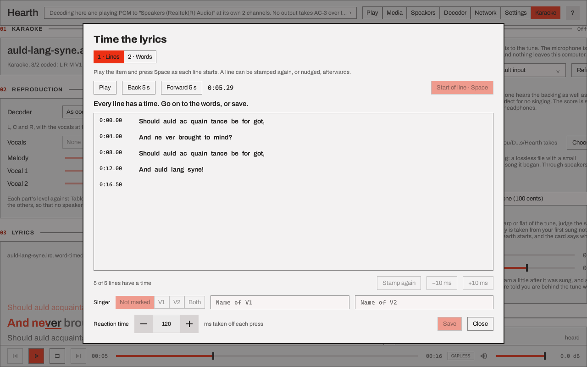
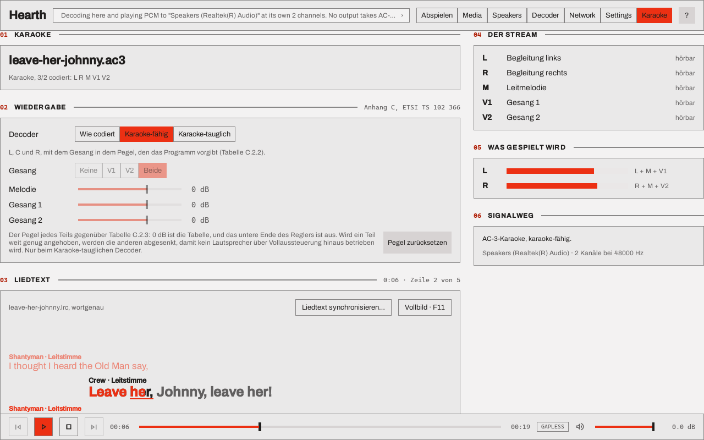
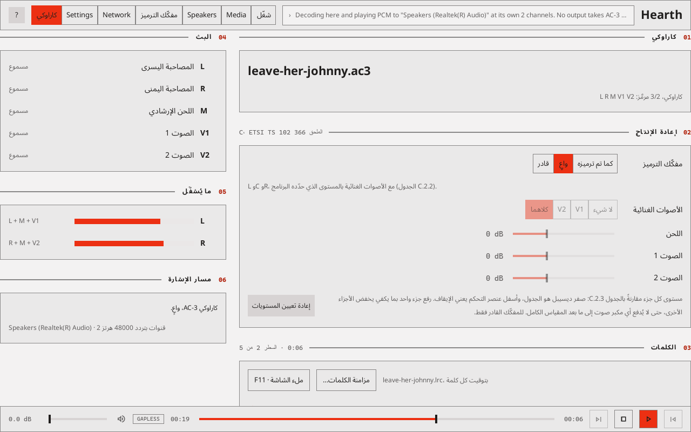

Hearth¶
Hearth plays AC-3, E-AC-3, E-AC-3 with Atmos objects, and AC-4 through this computer's outputs, an
HDMI or S/PDIF receiver, or synchronised network sinks. The desktop player, hearth, decodes a
stream for its local outputs, passes AC-3 and E-AC-3 to a receiver chosen in its output picker,
and plays a stream to a group of network sinks over Sendspin, a protocol for synchronised network
audio. hearth_sink is the firmware for the ESP32 boards that join such a group, and
Hearth for Android is a sink for Android TV that hands the stream to an AV receiver.
Using the desktop player walks through the window with a picture of each page. This page is the reference.
TrueHD and MLP are decoded here, and not passed through
The desktop player decodes TrueHD and MLP (.thd, .mlp, and the TrueHD track of an MP4, Matroska or MPEG-TS file) and plays
the result as PCM, to this computer's outputs and to a network group. It does not send TrueHD to a receiver as it is (the
output decision says "Passthrough of TrueHD is not available"). A network sink that lists truehd is sent the stream's access
units, 24 to a chunk, and decodes them itself (tested against the Hearth test sink only); every other sink is sent PCM or Opus,
converted to a rate it lists. Hearth for Android and the ESP32 sinks do not take TrueHD. The decode is lossless and 24 bits wide, and what reaches the output is float32
through the operating system's mixer, so it is not a bit-exact path. How the work is staged is in the
parity audit;
what the library has is in TrueHD and MLP; the roadmap row is
TrueHD and E-AC-3 as equals.
The audio library can now open the eight-channel MAT link for TrueHD (ALSA, PipeWire and WASAPI; Android has a bridge that has not been built; Core Audio refuses it), and the output decision knows it. ALSA and PipeWire are marked "run", and every other platform "not run": on 2026-11-01 an Onkyo TX-RZ740 reported TrueHD for a stream from a Raspberry Pi through each of them. The player does not yet pack MAT bursts, so a TrueHD item is still decoded whatever is chosen. The Output picker lists an output that opens the link as "TrueHD (MAT) ✓" on a platform that has been run and "TrueHD (MAT) opens, not run" on any other, and the reason line says which. The decision also works out, for a TrueHD item that is decoded, which of the stream's own presentations the output's width calls for (8 or 6 channels, else stereo) as the owner's fallback chain says; the player does not apply it yet, and there is no transcode.
The desktop player¶
hearth runs on Windows, Linux, and macOS with a Qt 6.8 or later kit, and builds as the
iclforge-hearth package on each. It reads raw .ac3, .ec3, .ac4, .thd and .mlp elementary streams, and
the first AC-3, E-AC-3, AC-4 or TrueHD track of an MP4, Matroska or MPEG-TS file (.mp4, .mkv, .ts).
A container is told by its first bytes, not its name, and an MP4's edit list trims the priming and
padding the encoder added. Add folder… lists those eight kinds of file, and any file can be
added or dropped. The queue marks a file it cannot read as not playable, with the reason, when it
reaches it, and skips it or stops there as Settings > Playback > An item fails says.
A file with a TrueHD track first and an AC-3 or E-AC-3 track after it, as a Blu-ray remux has, plays the
TrueHD track where the output decodes here, because it is the first track Hearth can play. Hearth cannot send TrueHD on
as it is yet, so where the output decision for the AC-3 or E-AC-3 track is a bitstream to a receiver, that track plays
instead and the receiver is sent it as it is. The decoder setting track (in the engine's DecoderSettings) says which:
automatic as described, best (always the TrueHD) or compressed (always the AC-3, E-AC-3 or AC-4 track). The window has no
control for it yet. The other track is listed in the Media page as another track of the file.
TrueHD and MLP are decoded to the stream's own channels and rate (44.1 to 192 kHz, up to 8 channels of the
2, 6 and 8 channel presentations) and placed on the output layout like any other bed: a layout that has a
channel's speaker plays it exactly, and a channel the layout has no speaker for is panned between the speakers it has.
A bare .thd or .mlp file is not read into memory; it is indexed once when it is opened, which reads the
whole file, and then read as it plays. So is a TrueHD track in a Matroska or MP4 file: the container is read once, a
window at a time, to find where the track's frames lie, and the track is then read from there as it plays, so a
film's remux of tens of gigabytes does not need the memory of the file or of the track. A Transport Stream is still
read whole, and one over 1 GiB is refused by name. Opening a film reads the file once from front to back, which takes as long as
the disk takes to read it. A damaged unit plays as
silence until the stream's next restart header; the This frame card shows the counts, and the diagnostics file adds them to the line of each item played.
A TrueHD decoder can only join a stream at a unit that carries a major sync, and the encoder decides how often there is one (every 16 units, 13 ms, in FFmpeg's streams; every 128, 107 ms, by default in this project's encoder; at most every 4,096, 3.4 s). A seek goes back to the last of those before the place asked for, decodes forward and drops what comes before the place, so the audio starts in the unit that holds it, within a unit (0.83 ms) and not at the restart. What it costs is the decode of the part between, which is some 45 ms of work at the longest interval. Two TrueHD items of one rate join without a gap, and the sample count at the join is the exact length of the first item: whole units, less the padding its last unit counts.
The window has seven pages, chosen in the header or with Ctrl+1 to Ctrl+7.
| Page | What it holds |
|---|---|
| Play | The queue (add files or a folder, or drop them on the page), the transport bar (play and pause, stop, previous and next, a position scrubber, the Gapless toggle, volume), per-channel levels, BS.1770-4 loudness, the metadata of the frame being decoded (for TrueHD, the substream, the dialogue normalisation word as sent, and the restarts, units that waited for one and lossless checks that failed so far), the Objects card for E-AC-3 with Atmos objects, and the signal path from decoder to output |
| Media | What the decoder reads from a queued item: its stream, bitstream or presentation information and metadata, with Copy and Export JSON…. For a TrueHD or MLP item a Stream card gives the rate, the substreams and their channels, the access units, the bit rate and how often a decoder can join the stream |
| Speakers | The speaker layout, the routing of each speaker to an output of the device, size, trim and delay per speaker, the bass-management crossover, and an identify tone |
| Decoder | The decoder's controls on an AC-3 and E-AC-3 tab, an AC-4 tab and a TrueHD and MLP tab. The page turns to the tab of the item that is playing, and a change reaches that item at its next access unit or frame (a TrueHD change, at its next restart). The TrueHD tab chooses the presentation (best, or the 2, 6 or 8 channel one) and whether a failed check drops the unit (strict) or is counted and decoded on (lenient); it has no control for dialogue normalisation or dynamic range, which the stream carries and nothing applies |
| Network | The Sendspin players found on the network, pairing, groups and their volumes, and each paired Hearth sink's own settings and firmware |
| Settings | Playback, the network name and discovery, pairing records, appearance, language and diagnostics |
| Karaoke | What a karaoke AC-3 or E-AC-3 stream is (its coding mode and which of the melody and the vocals it carries), the reproduction chosen for it, which part each speaker carries, and the lyrics. See Karaoke |
The header says where playback goes. Clicking it, or Choose… in the signal path, opens the
output picker: this computer's outputs for decoded audio, the outputs that take AC-3 and E-AC-3 as
a bitstream, and the network groups. Its Play here button moves playback to the row chosen.
Until a row is chosen the window decodes to the computer's default output, and the choice is kept
for the next start. A row in the passthrough section plays to that output as a receiver
(Passthrough to a receiver); a receiver that is not listed at a start
is not played to, and the window decodes to the default output until it is.
A network sink that another server holds, such as one Music Assistant holds, shows as in use by
another server, with a Take it back button. From a paired ESP32 sink's settings page the app
updates that sink's firmware. The engine and the Sendspin protocol are tested in CI, including
against hearth-testsink and the aiosendspin 9.1.1 server library that Music Assistant uses;
Music Assistant itself has not been tested.
Passthrough to a receiver¶
With a passthrough row chosen, an AC-3 or E-AC-3 item that the output takes is sent to it as IEC 61937 bursts: the access units of the file, unchanged, for the receiver to decode. An E-AC-3 stream with Atmos objects goes with its object layer. The output is held in exclusive mode while a bitstream goes out, so nothing else on the computer plays through it. The header says what each item is doing and why.
Everything else is decoded and played to the same output as PCM:
- an AC-4 item, which no receiver found takes;
- a programme other than the first of an E-AC-3 stream that carries several, since a receiver plays the first;
- a karaoke stream with Aware or Capable chosen on the Karaoke page, since the reproduction is the decoder's to make (Karaoke);
- any item while the output says it takes neither format. On Linux that includes a receiver that is off or on another input, which reports no descriptor.
A receiver that takes AC-3 and not E-AC-3 is sent an E-AC-3 item transcoded to AC-3: its 5.1, with the stream's metadata carried across for the receiver to apply. An object layer does not survive that, and the receiver gets the bed the objects were mixed into.
Items sent in the same format at the same sample rate follow one another on the open link with no gap, as decoded items do, when Gapless is on. Between an item that is sent and one that is decoded the output closes and opens again, and the receiver takes a moment to lock.
While a bitstream goes out the receiver decodes and renders it, so the Decoder page's controls, the Speakers page's setup and the volume in the transport bar are not applied; the Decoder page says so and the volume control is closed. The levels, the loudness and the frame metadata on the Play page are of a decode made here beside the stream. For a transcode they are of what is sent.
This is the path forge play uses. On Windows that path locks AC-3, E-AC-3 and signed Atmos on an
Onkyo TX-RZ740 (Windows), and from a Raspberry Pi
it has played the same stream shapes to a receiver (Where it runs). From the
window it is tested in CI against a stand-in link that reads the bursts back as a receiver would;
the window itself has not yet been run into a receiver.
Karaoke¶
The Karaoke guide covers the page, the lyrics and the singer view; this section is the short form.
A karaoke AC-3 stream (bsmod 7 with a layout wider than mono; ETSI TS 102 366 Annex C), or an
E-AC-3 one flagged the same way, codes L and R, a guide melody M where a centre would be, and one
or two vocals V1 and V2 where the surrounds would be. Played as coded, the vocals come from the
surround speakers. The Karaoke page chooses how the decoder reproduces it:
- As coded plays the channels as the stream codes them.
- Aware (the default) reproduces L, C and R, with the vocals at the level the programme set (Table C.2.2). On two speakers it is the Lo/Ro fold, which Annex C says is the same thing.
- Capable lets you choose the vocals: none, V1, V2 or both (Table C.2.3). A single vocal joins the melody in the centre; a pair goes to the left and the right. It also takes a level for the melody and for each vocal, from 24 dB below the table (off) to 12 dB above it.
The page says in words when the choice cannot apply: a stream that is not karaoke (an ordinary programme, an AC-4 stream, which has no karaoke mode, or an E-AC-3 stream flagged karaoke whose programme has a dependent substream or an object layer, which plays as coded), a stream played As coded to a receiver chosen for passthrough, which goes out as a bitstream for the receiver to decode and reproduce as it will, and a stereo fold of Lt/Rt, for which Annex C defines no reproduction. With Aware or Capable chosen, a karaoke stream is decoded here and the receiver is sent PCM, so the choice is heard. The choice and the levels are kept across starts, the only decoder settings that are. The Decoder page shows the choice in one line with a button to the page. What is checked is Annex C's own tables and, for AC-3 and E-AC-3, Dolby's reference decoder, which reproduces both (how it is checked).
To a network group, the reproduction is the same on every member. A sink that lists the
karaoke setting (and karaoke_vocals, for Capable) is sent the stream as it is, and is told the
choice before the stream starts and again when you change it while the item plays; it decodes for
its own speakers, laying them out from the reproduction (L, C, R and the LFE) and not from the
coded layout. A sink that does not list them, such as a board on firmware from before them, is
sent PCM that Hearth has decoded with the reproduction applied, so the members never play two
things. Where such a sink takes no PCM either, the stream plays as coded on it and the Network
page says so. The Karaoke page's choice reaches a sink as settings, which replace that sink's
settings whole: what the sink's own page set is not kept.
A sink also says which codecs it reproduces karaoke for (karaoke_codecs in its support
object), and one that says nothing reproduces AC-3's alone. An E-AC-3 karaoke stream is
therefore decoded here and sent as PCM, with the reproduction applied, to a sink that does not
list eac3, and goes as it is to one that does, unless the sink decodes fewer channels of the
codec than the stream has: a stream of five channels and an LFE is decoded here for an
ESP32-C6, which decodes two, and for any sink with a limit below six. The boards are in An ESP32-S3 sink,
An ESP32-C6 sink and An ESP32-P4 sink.
The levels of the melody and the vocals (Capable only) travel the same way, as karaoke_melody_db,
karaoke_vocal1_db and karaoke_vocal2_db, and only the ones that change what is heard: a level
of 0 dB is left out, and so is the level of a vocal the Vocals choice leaves out. A sink that has
the reproduction but does not list a level's key (a board on firmware from before them) is sent PCM
as soon as that level is moved, so no member plays the table while another plays the level. A level
changed while an item plays reaches the sinks that are decoding for themselves; a sink that was
started on the item without its key keeps the table until the item is played again.
Lyrics¶
Beside a stream, name.lrc (the extension in any case) is its lyrics, and where there is none
name.srt, a SubRip file, whose cues are lines with no words in them, and then name.ass, an
Advanced SubStation Alpha script, whose karaoke tags give each syllable its time, and then
name.kar, a MIDI karaoke file, whose syllables are timed through its tempo map. The Karaoke page shows the
line being sung, the lines before it and after it, and a word at a time where the file times its
words:
- a word that has been sung is in the accent colour, a word not yet sung is muted, and the word being sung is underlined and fills in the accent from left to right as it is sung;
- a file that times lines and not words has each whole line emphasised as it is sung, and no word times are invented;
- a file with no times is shown whole and is not followed;
- with no file, the page says which name it looks for; a file that is not UTF-8 or UTF-16 is not shown, and playback is not affected.
With no lyrics file, a name.cdg beside the stream, the picture of a karaoke disc ripped on its
own, is shown instead: its words are part of the picture, so nothing in it is read as text, and
it moves with the same position and the same lyric delay (see A CD+G
disc). With both beside the stream the words are shown, and a
Show choice (Words or Picture) on the Lyrics card and on the singer view's bar shows the disc
instead, until Hearth is closed.
The format is LRC: [mm:ss.xx] for a line, the enhanced <mm:ss.xx> tag before a word, and
[offset:], [ti:], [ar:], [al:], [by:] and [length:]. The text is UTF-8, with or
without a byte-order mark, or UTF-16 with one, in either byte order (what an editor saves as
"Unicode"), so Hebrew and Yiddish files read as they are. A file in an 8-bit code page such as
Windows-1255 is not read: save it as UTF-8 or UTF-16.
Duets. A line that starts V1:, V2: or V1+V2: (after its time) is sung by the first
vocal of the stream, the second, or both together; the marker is not shown as text. The two singers'
names are [v1:Shantyman] and [v2:Crew] in the file. Where the file marks its lines the Karaoke
page shows two name fields (typed for this run of Hearth, never kept for a song; a typed name comes
before the file's, which comes before "V1" and "V2"), and each line says who sings it: by name, by
side (the second singer's lines are indented) and by colour, which is never the only cue. On a
karaoke stream it also says guide where the vocal that is playing sings the line, and you
where it does not, with a sentence under the names for what the Vocals choice leaves you to sing.
Lyric delay in Settings (Playback), from -1,000 to +1,000 ms in steps of 10, is added to the file's own timing; a positive value shows the words later. A bluetooth speaker or a receiver with a long path is where it is needed, because what Hearth follows is the output's own delay-corrected position, and a file's times are rarely right to the frame.
Full screen (F11, or the button on the page; Esc leaves) is the singer view: dark, with
larger type and more lines, and a position bar, Previous, Play/Pause, Next, Queue and the
vocals chooser kept at the bottom. Space pauses. Choosing a vocal there chooses the capable
reproduction with it. Press the position bar, or drag along it, to move the item: while the bar is
held the words and the clock show the place held, and the item moves when it is let go. Left
and Right move it five seconds either way, and stop at the ends of the item. Queue (or Q)
opens the queue beside the words, with the item that is playing marked and a press playing that
item; the strip at the top names the item that comes next.
On the Play page, an item that has lyrics, or a CD+G picture, gets a Lyrics card with the same view and a Full screen button. It has a column of its own beside the queue when the window is 1,580 pixels wide or more, and is the first card of the monitor column in a narrower one, so that starting a song with lyrics does not move the rest of the page. An item with none gets no card.
Timing the lyrics¶
Time the lyrics... on the Lyrics card is for an item whose words have no times, or whose times are for lines and not words. It opens a window over the page, and the item plays as usual:

The karaoke example's own file, which has its times already: hearth --smoke-shot timing.png --page timing --setting "microphone/takesFolder=C:/Users/you/Documents/Hearth takes" --open examples/karaoke/auld-lang-syne/auld-lang-syne.ac3 --seek 5200.
- Lines. Press
Space, or the button, as each line starts. A press is taken to be the reaction time late (120 ms to start with, set in the window, kept across starts), and that is taken off, so that what is stored is where the sound was and not where the finger came down. Choose a line to play from it, to stamp it again, or to nudge it 10 ms at a time. - Words. Each stamped line has its words spread over it by their letters, drawn slanted and
muted: a guess. Play, and press
Spaceas each word starts; a word that was pressed turns solid and keeps its time. A line's words are guessed again only where no press has set them.
To put one word right, choose it with a click, in either pass. It is outlined, the item is
cued 1.5 s before it, and the window says which word it is and when it starts. The next Space
in the words pass presses that word in place of the next guess, once, with the reaction time
taken off as for any press; Stamp again presses it at the position now, and -10 ms and
+10 ms move it by that, the word and not its line. Choosing the word again cues it again and
lets Space press it again; choosing its line lets the word go, and the buttons are the line's
again. This is how a file that came with the times of its words, from a forced aligner for one,
is corrected: the words of such a file are taken as given, so the words pass has none to press
until one is chosen. A word stays between its neighbours (stamped long after the next word, it
stops at the next word's time), so move the neighbour first when a word has to go past it.
- A duet. Choose a line and set its Singer (not marked, V1, V2 or both); the row shows the
marker as it is written. The two Name fields are what the file calls the singers (
[v1:]and[v2:]), kept with the file, unlike the names typed on the Karaoke page for a run. A name has no brackets or line breaks, since a tag ends at the first].
Save writes the item's .lrc, or makes one beside the item, and keeps the first file that was
there once, as .lrc.bak. Nothing is shown as sung from the window's guesses until it is saved, and
Esc does not close the window while there are edits that were not saved (Discard and close
does). Times are kept to a hundredth of a second, which is what the format has.
An item with no words says so, and takes a text file with a line of the words to a line, saved as
UTF-8 or UTF-16 (an .lrc with no times will do), and times that.
A file that already has word times opens with them as given, solid and not drawn as guesses, so the window is where they are checked against the sound and corrected. That is how the output of a forced aligner is used: Timing a song with a forced aligner makes such a file with outside software and brings it here.
AC-4¶
The desktop player plays channel-based, immersive and object AC-4 (A-JOC and direct-coded) through the library's AC-4 decoder, which decodes it for every local output. No local output takes AC-4 as a bitstream. A stream none of whose presentations the decoder decodes stays in the queue, marked as not playable with the decoder's reason, and is skipped.
The AC-4 tab of the Decoder page has six cards:
- Presentation. Automatic, or one presentation from the stream's table of contents. The
picker records a choice by the presentation's
presentation_idwhere the stream sends one, and by its place in the table otherwise. With no choice made, the decoder selects the presentation that best meets its preferences: the first in the language of the computer's locale, one that carries audio description when Mix in audio description is on, and one made for headphones when the Dynamic range device is Portable headphones. The table beside the picker shows each presentation's language, channel count, content and substream groups, with the one playing in bold. - Dialogue. Enhancement, 0 to 12 dB, raises dialogue against the rest of the mix where the stream carries dialogue enhancement data, up to the stream's own limit. Dialogue level, -12 to +12 dB, sets the dialogue against the music and effects where a presentation carries them apart, up to the most the stream allows. Mix in audio description plays first a presentation that carries an associated programme and mixes it in, at Its level, -12 to 0 dB.
- Dynamic range (marked AC-4 only). Device chooses which of the compression curves the stream carries applies: Automatic (the one for the output level: home theatre up to -27 dBFS, flat panel TV up to -17, portable above that), Home theatre, Flat panel TV, Portable speakers, Portable headphones or No compression. Output level, -31 to 0 dBFS, is the level that Dialogue normalisation brings the stream's dialogue to. With normalisation off, both are disabled and the stream plays at its coded level with no compression.
- Stereo and mono (shared with AC-3 and E-AC-3). Downmix is Lo/Ro or Lt/Rt and applies when the speaker layout is 2.0; a 1.0 layout folds to mono, and a wider layout is rendered instead of folded. Follow the stream's preferred downmix uses the method the stream names in place of that choice for a stereo layout, and takes Lt/Rt's Pro Logic II form where the stream prefers it; the page has no Pro Logic II control of its own. Mix the LFE in is on for AC-4 until it is set here or on the AC-3 and E-AC-3 tab.
- Errors (shared with AC-3 and E-AC-3). Bad frame is Stop, Repeat and fade, or Mute; AC-4 is back to what the stream carries at its next I-frame.
- Immersive and objects (marked AC-4 only). Layout folds an immersive element to 5.1.2, 5.1.4, 7.1, 7.1.2 or 7.1.4 when the speaker layout does not itself fold to stereo or mono; As coded keeps the layout the stream was coded in. Core decoding reconstructs the immersive element and its objects in a lighter form for low-complexity playback, and renders the core layout alone; off decodes in full. Objects are rendered into the speaker layout beside the channels.
The Media page describes an AC-4 item with a Stream card (bitstream version, frame rate, sync frames and CRC failures, bit rate, I-frames, splices, substreams), the presentations, the substream groups, an Immersive card when the stream carries A-JOC, and the metadata of the presentation a decoder with no preferences selects: dialogue level, loudness, dynamic range, dialogue enhancement and downmix.
A seek in an AC-4 item starts the decoder at the last I-frame at least 6,144 samples before the point asked for and drops what comes before that point. Gapless playback keeps the output open from one item to the next when both have the same sample rate and speaker layout, and an AC-4 item can follow an E-AC-3 one on the same output. A network group starts again, with a gap, when the next item goes to its members in another form: another burst type, or PCM alone. The decoder's own delay, 1,313 samples at frame rate index 13 (27 ms at 48 kHz), is not trimmed from the start of an item, so two AC-4 items in a queue play about that far apart.
In a network group, a member on the Hearth extension role takes the stream itself as IEC 61937
bursts, and a member that is a standard Sendspin player takes PCM decoded here. An AC-4 item goes
to an extension-role member as IEC 61937-14 bursts only if the member lists ac4 among its data
types (an ESP32-P4 whose image has the AC-4 decoder does, up to 5.1, and an ESP32-S3 whose image
has it and the 64 KB data cache does, at 2.0 and up to 25 frames a second; both state no objects,
and the published images have no decoder); otherwise that member gets PCM decoded here where it
takes PCM, and else nothing for the item. It also gets nothing when the presentation chosen on
the AC-4 tab is one a sink would not choose with no preferences: Hearth decodes that
presentation here, and only the PCM members hear it.
An extension-role member that cannot take a stream as it is (more channels than it decodes, say) is sent it decoded here as PCM, at the layout it takes, and the group editor shows what each member is sent and why. An ESP32-C6's buffer holds under a fifth of a second of PCM, so its reason carries a note that the stream can drop out on a busy WiFi network, and it is sent PCM in units of 10 ms. For a board on such a network, the Decoder tab of its page has an "Audio decoded here" choice, PCM or Opus: Opus is lossy and a twelfth of PCM's bytes, so it rides out gaps in the link, and it applies the next time the group plays. The choice is kept for that board, so a restart of Hearth does not undo it, and it goes with the board's pairing if that is forgotten. A board lists Opus only where its firmware decodes it, which the C6's does.
A member that states how many objects it places (max_objects, per data type) is sent an item
that has more as PCM decoded here, with the objects placed at the layout it takes. Hearth reads an
AC-4 presentation's count from its first I-frame, the LFE not counted. An AC-4 presentation of
objects alone has no channels for the member to fall back to, so its limit holds whatever the
member's layout or objects setting say; one with channels besides is played by a member that places
fewer as its bed, as an E-AC-3 stream is.
Languages¶
The window ships in English and in German, Spanish, French, Arabic, Hebrew and Yiddish, chosen in
Settings. A language switches the layout direction (Arabic, Hebrew and Yiddish read right to
left), the typeface and the words of every page. The catalogues are
apps/hearth/ui/assets/translations/hearth_<code>.ts; each holds all 1106 strings of the window,
every one with a rendering. A string a catalogue lacks would show in English, which is what Qt does
with a message it has no entry for. English has a file too, hearth_en.ts, holding only the
messages that carry a count (below).

The Karaoke page in German, with the duet example 6.3 s in: ICLFORGE_GUI_LOCALE=de hearth --smoke-shot de.png --page karaoke --open examples/karaoke/leave-her-johnny/leave-her-johnny.ac3 --seek 6300. The words of the lyrics are the file's own, and so is the stream's file name. The picture was taken before the rest of the window had its translations, so the header's page names are still English in it.

The same page in Arabic (ICLFORGE_GUI_LOCALE=ar): the layout mirrors, and the bundled Noto Sans Arabic face is used. Both pictures are of 2026-10-12, before the page had its Microphone card.
The translations are machine-made and no speaker of any of the six has read them. Settings says so under the language chooser, as the Forge GUI and Crucible do under theirs. They reuse the renderings those apps already have for the words they share (Aware, Capable, Vocals, Melody guide, Lyrics and the rest of the Forge GUI's Karaoke flow, and the glossary on Crucible's languages page: receiver, passthrough, slot, bed, object, underrun and the rest), so one term reads one way in all three, and they take their address forms: Sie in German, tú in Spanish, vous in French, the masculine singular imperative in Arabic, the plural in Hebrew and איר in Yiddish. Names that are not translated: Hearth, Sendspin, ICL Forge, Dolby, Atmos, AC-3, E-AC-3, AC-4, JOC, PCM, Opus, IEC 61937, MP4, Matroska, MPEG-TS, mDNS and WiFi. The terms a review by a speaker has to settle:
| Term | de | es | fr | ar | he | yi |
|---|---|---|---|---|---|---|
| lyrics | Liedtext | letra | paroles | الكلمات | מילות השיר | ווערטער |
| vocals | Gesang | voces | voix | الأصوات الغنائية | שירה | געזאַנג |
| melody guide | Leitmelodie | melodía guía | mélodie guide | اللحن الإرشادي | מנגינת הנחיה | גיד־מעלאָדיע |
| aware, capable | Karaoke-fähig, Karaoke-tauglich | consciente, capaz | aware, capable | واعٍ، قادر | מודע, בעל יכולת | באַוווּסט, פֿעיִק |
| time the lyrics | synchronisieren | sincronizar | synchroniser | مزامنة | סנכרון | סינכראָניזירן |
| stamp (a line's time) | setzen | marcar | horodater | حدّد الزمن | קבעו | שטעלט |
| singer | Stimme | cantante | chanteur | المغنّي | זמר | זינגער |
| queue | Warteschlange | cola | file d'attente | قائمة الانتظار | תור | ריי |
| speakers (surround) | Surround-Lautsprecher | altavoces envolventes | haut-parleurs surround | مكبرات الصوت المحيطية | רמקולים היקפיים | סראַונד־הילכערס |
| sink (a Hearth sink, any Sendspin player) | Wiedergabegerät | reproductor | lecteur | مشغّل | נגן | שפּילער |
| pair, pairing | koppeln, Kopplung | emparejar, emparejamiento | appairer, appairage | إقران | צימוד | פּאָרן, פּאָרונג |
| passthrough | Passthrough | paso directo | transmission directe | تمرير مباشر | מעבר ישיר | דורכלאָז |
| bitstream | Bitstream | flujo de bits | bitstream | تدفّق بتّات | זרם סיביות | ביטסטרים |
| burst (an IEC 61937 burst) | Burst | burst | burst | دفعة | פרץ | בורסט |
| take (a recording of your singing) | Aufnahme | toma | prise | تسجيل | הקלטה | אויפֿנאַמע |
| pitch (how near the tune) | Tonhöhe | afinación | justesse | طبقة الصوت | גובה צליל | טאָן־הייך |
The open points: the German fähig and tauglich are the Forge GUI's choice for aware and capable and may read the wrong way round to a German speaker; aware stays English in French there, as it does here; Yiddish has two words for a loudspeaker in the family's catalogues, and the one here (הילכערס) is Crucible's; "stamp" is a verb for giving a line its time, which no language has one word for. The Karaoke page's own entries call a sink a player (the word a Sendspin player is also called), and the pages added since follow that, so a Hearth sink and a Sendspin player read alike and differ only by the name before them. Where Crucible's and the Forge GUI's catalogues differ, these pages take the rendering the finished Karaoke entries already use: Close in Hebrew is סגירה here and in the Forge GUI, סגור in Crucible; Speakers in Yiddish is הילכער, as the Karaoke entries have it, where the Forge GUI's wizard has רעדער, which is also the plural of ראָד (a wheel).
A string with a count is a plural message. English makes a plural by a suffix and other languages do not: Arabic has six forms (none, one, two, three to ten, eleven to ninety-nine, a hundred and over), French counts 0 and 1 as singular, and the other three here have one form for 1 and one for everything else (Qt's table gives Hebrew and Yiddish no more, so the Hebrew renderings cannot say two or many apart). So a count goes through the plural machinery rather than through a suffix pasted on:
(QObject::tr("%n bursts", "", n) in C++). The source carries the form most counts take;
hearth_lupdate writes one <numerusform> per form each language needs, and a translator fills
them all. A message with two counts holds one of them as the %n and the other as an ordinary
%1. English needs its forms too, because the source holds only one of the two: they are in
hearth_en.ts, which hearth_lupdate keeps (Qt's PLURALS_TS_FILE: the plural messages and
nothing else) and which main.cpp installs beneath the language the person chose. Fill its two
forms by hand like any other; they are English written by the people who wrote the source and not
a machine draft.
Adding a string. hearth_lupdate (the CI step "Check the Hearth translations are up to date"
runs the same target) adds it to the six catalogues as an empty type="unfinished" entry, and
copies the rendering of an identical source string in another page into it, also as unfinished:
a suggestion, which the window shows until a person confirms or replaces it. Fill it in Qt
Linguist or by hand, and remove the type attribute once the entry has a rendering you are
willing to ship. Run hearth_lupdate once more after filling by hand: it adds the suggestions
the new renderings make, and the committed files are what a further run leaves unchanged.
What fails. The [hearth][translations] cases of
apps/crucible/ui/tests/test_translations.cpp read the six files and fail on an entry left
unfinished, on a dead one (vanished, obsolete), on an empty rendering, on a placeholder
(%1 to %9, %n) a rendering drops or invents, on a plural form left empty, on a name from
the list above that a rendering loses, and on one language holding a string the others do not;
a further case fails on a plural message that hearth_en.ts lacks or holds unfinished.
So a change that adds or rewords a qsTr() string in the window fills the six entries, and the
English forms of a plural one, in the same pull request. The rules are the ones
Crucible's languages page lists.
Diagnostics¶
Settings > Diagnostics has three buttons that produce the same text report of what Hearth has done: outputs opened, items played, sinks found and paired, and every error. Save diagnostics… writes it to a file, View live… shows it in a window that refreshes twice a second, and Copy diagnostics puts it on the clipboard. Pairing keys, codes and file paths are left out of it, and nothing is sent anywhere.
Setting ICLFORGE_HEARTH_DIAGNOSTICS_PORT to a port number, before Hearth starts, also serves
the report at http://127.0.0.1:<port>/diagnostics. The endpoint listens on the loopback address
only, and stays off when the variable is unset, does not name a port, or names one that cannot be
bound. On Windows every note Hearth records for the report is also sent to the debugger output
(OutputDebugString), where DebugView or an attached debugger shows it.
Command line¶
hearth takes the files to open, and a few options. None is needed to use it: they open a file
at start, and take screenshots of the window with nobody at the machine.
| Option | What it does |
|---|---|
<file> |
Opens the file, as hearth song.ac3, as Windows runs hearth.exe "%1" for a double-clicked .ac3 or .ec3, and as the Linux launcher runs hearth %F: it is added behind the queue the window brings back, and it starts. Several files are queued in the order given and the first starts. It waits, cued and not started, on a first run (the dialog that says where the sound goes comes first), and with --seek, --shot or --smoke-shot |
-- |
Ends the options: everything after it is a file, so hearth -- --page opens a file called --page |
--open <file> |
A file named as an option, once for each --open, in the order given with any others: it cannot be read as anything else, so it is the form to write in a script. It queues and plays as a file on its own does; a capture or --seek cues the first file instead (loaded, not playing), so the Play, Media and Karaoke pages show it |
--seek <ms> |
Starts the first file at that position in milliseconds and holds it paused there, so a lyric view shows a word part way through (a stopped item has no position to show). It plays a moment of sound at the output it goes to, and needs a file |
--page <name> |
Opens on a page (play, media, speakers, decoder, network, settings or karaoke), on a dialog over the Play page (firstrun, shortcuts, about or licences), or on the Karaoke page with the singer view open (singer) or the window that times the lyrics (timing, which opens once a file is loaded). A capture draws the singer view in the window at its own size, not on the whole screen, so that the picture does not depend on the monitor |
--sing <file.wav> |
A capture of a performance: the file is the singer, and the microphone is the file. The first file plays from its start to the --seek position with the Microphone card on, in real time, and the picture is taken as it gets there, with the pitch ribbon, the marks under the lines sung and the score as they are while somebody sings. The file is sung along to the song as the song is heard, so a recording that is in time with it reads as in time whatever the output adds. No microphone is opened and nothing is played: the song goes to an output that plays to nothing (the window calls it "Speakers"), so a capture is silent and runs on a computer with no sound device, and the rule that only a person's press opens a microphone is not bent, because no microphone is there to open. The headphones answer is taken as yes, since a file has no room for the backing to leak into. It needs --smoke-shot or --shot, a file, --seek and --page karaoke or --page singer, and without them it is not used, and the log says which |
--finish-singing |
With --sing: holds the song at the --seek position and ends the performance before the picture, as a person's press on Turn off does, so that the Microphone card shows its Last performance |
--decoder-format <eac3\|ac4> |
Which tab the Decoder page opens on |
--open-output-picker |
Opens the output picker over the page |
--size <width>x<height> |
Opens the window at that size in pixels, as --size 1280x1400, for a picture of a page whose cards run on below the size the window opens at. A window is not made taller than the screen it is on |
--setting <key>=<value> |
Puts a value in a capture's settings before the window reads them, once for each --setting: microphone/takesFolder=<folder> for where the Microphone card looks for takes, appearance/textScale=150 for the text size, window/geometry=100,100,1100,700 for a window that was left there (a capture opens at its own size otherwise, because its store is empty). It needs --smoke-shot or --shot; without one it is not used, and the log says so, so it never changes a person's own settings |
--smoke-shot <png> |
Saves the window to a PNG once it has settled, and quits, with network discovery off: nothing browses the network, so there is no firewall prompt and no sink from the network in the picture. This is the one to put in a script |
--shot <png> |
The same capture with network discovery on, as the window runs. On Windows that asks for a Windows Firewall rule (a UAC prompt), so run it where somebody can answer it |
On Windows the installer registers .ac3 and .ec3 to open in Hearth, so a double-click is a
launch with that file.
One Hearth plays. A launch that would play files first offers them, and its --page, to a
Hearth that is already running under the same account. That one queues them behind its queue,
starts the first, comes to the front and switches to the page asked for, and the second process
ends without a window. The hand-over is a local socket (a named pipe on Windows) that only the
same account can open. It is only for a launch that plays: one with no file, with --seek, or
with --shot or --smoke-shot runs on its own (a capture does not even listen, so a running
Hearth is never handed to one). If a Hearth is running but does not answer, the launch runs on its
own as it always did. Where another program's window is in front, Windows may only flash Hearth's
taskbar button rather than bring its window forward.
A capture runs against a scratch settings store, so it neither reads nor changes a person's own
queue, devices or pairings, and it does not show the first-run dialog unless --page firstrun
asks for it. The Karaoke page's microphone card names its takes folder under a home that is
nobody's (C:/Users/you/Documents/Hearth takes on Windows), so that a picture of the page does
not carry the name of the account it was taken under. Its exit code is 0 for a picture saved, 2
when the picture could not be saved, and 3 when an --open file did not load, or did not reach
its --seek position, within fifteen seconds (with --sing the song takes as long again as its
position is from the start), or when --sing's file is not a WAV file or the song has no melody
to score against (the picture is saved all the same, for what the window said about the file). A
script that regenerates screenshots can stop on that.
QT_QPA_PLATFORM=offscreen QT_QPA_FONTDIR=C:\Windows\Fonts \
hearth --smoke-shot karaoke.png --page karaoke \
--open examples/karaoke/auld-lang-syne/auld-lang-syne.ac3 --seek 5000
QT_QPA_PLATFORM=offscreen keeps a window from appearing, and QT_QPA_FONTDIR gives the
offscreen platform a font directory, without which the text is drawn as boxes. The lyrics file
beside the item is found as it is when the item is played. ICLFORGE_GUI_LOCALE=de (or fr,
es, ar, he, yi) takes the picture in that language, for a run that leaves the person's own
choice alone.
ESP32 sinks¶
hearth_sink uses Improv Wi-Fi for initial network setup and Sendspin to pair with a server and
play in a group. It decodes AC-3, E-AC-3, and Atmos objects for its configured speaker layout; the
ESP32-C6 build plays stereo only. ESP32-S3 boards and an ESP32-C6 with an ESP32-S3 have played
AC-3 and E-AC-3 in Sendspin groups on hardware, for ten minutes each without an underrun (the
S3 sink guide and the C6 sink guide have the runs); no DAC
was wired to the boards. Every release from the next one on publishes sink firmware for the
ESP32-S3, the ESP32-C6, and the ESP32-P4 (one image for each of its two silicon generations, the
newer with a screen); Sink firmware covers installing it and updating a board
over its network.
AC-4 on the sinks. A hearth_sink built with the AC-4 decoder (sdkconfig.ac4; CI builds
it) lists ac4 beside ac3 and eac3 and decodes an AC-4 stream a group sends it. An ESP32-P4
at 360 MHz takes 2.0 and 5.1 in real time and states 6 channels
(AC-4 from a server, on the P4); an
ESP32-S3 with the 64 KB data cache takes 2.0 and states 2 channels and 25 frames a second
(on the S3). Neither decodes a
presentation's objects, and the desktop player decodes what is past a sink's limits and sends it
PCM. The published ESP32-P4 (v1.x and v3.x) and ESP32-S3 images carry the decoder and list ac4 (since 2026-10-29; what it cost each
board is measured in planning/ac4-in-release-images.md), and an ESP32-C6 has no room for the decoder beside Wi-Fi, so it takes AC-4
programmes as PCM.
Where it runs¶
| Target | What runs there | Strongest evidence |
|---|---|---|
| ESP32-S3 | hearth_sink, a Sendspin sink (setup guide); i2s_player, which loops a fixed test stream |
Two boards in a Wi-Fi group for ten minutes without an underrun; all decode fixtures run in real time on a board; the sink pairs and plays under QEMU in CI |
| ESP32-P4 | The AC-3 and E-AC-3 decoder, and hearth_sink built for boards of silicon revision v1.x, which reach Wi-Fi through the board's onboard ESP32-C6 (firmware image); AC-4 decode in a build with CONFIG_ICLFORGE_AC4 (off in the published images; AC-4 on the P4) |
All AC-3 and E-AC-3 decode fixtures run in real time on a board at 360 MHz; CI builds the sink firmware |
| ESP32-C3 | The same decoder, in the fixed-point tier | Correct under qemu-riscv32 emulation. No board has run it |
| ESP32-C6 | Fixed-point decoder; hearth_sink's Sendspin player, stereo only |
All decode fixtures run on a board; a stereo Sendspin group with an ESP32-S3 played ten minutes with no underruns on either board (setup guide). CI builds the Sendspin player for this part, for the 4 MB and the 16 MB flash layouts, and does not run it: ESP-IDF's RISC-V QEMU emulates the ESP32-C3 and no other part |
| ESPHome | An external component wrapping the ESP32-S3 decoder | Config-checked in CI against the manifest; not yet a media_player or speaker source |
| Windows, Linux and macOS | hearth (the desktop window, Qt 6.8+) with its engine and Network page; hearth-testsink, hearth-testserver and hearth-render development tools |
Engine and Sendspin interoperability tests run in CI, and the window builds there on all three platforms; each committed AC-4 test stream that the decoder accepts plays through the engine sample for sample as the library decodes it |
| Android TV | Hearth for Android, a Sendspin sink that passes AC-3 and E-AC-3 to the receiver on its HDMI output | One recorded run on an NVIDIA Shield TV (2019) into an Onkyo TX-RZ740: AC-3 5.1 and E-AC-3 5.1 for two minutes each with no underrun, sent by the test server. CI builds a debug APK and runs its tests on an emulator |
The desktop player's passthrough uses the same path as forge play. That command has played the
AC-3, E-AC-3 and signed Atmos stream shapes listed there to a receiver through a Raspberry Pi 4B
without an underrun
(Raspberry Pi passthrough).
The window's own use of it is tested against a stand-in link
(Passthrough to a receiver).
Hearth for Android¶
Hearth for Android is a Sendspin sink for Android TV. It pairs with the desktop player, passes the AC-3 or E-AC-3 stream it is sent to the AV receiver on the box's HDMI output, and shows a karaoke item's lyrics in time. It is built from source; no release carries it, and it does not decode on the device, so a stream that reaches it as PCM is not heard. Hearth for Android has the build, the pairing, the screens and what has been run.
What it does not do¶
- Send AC-4 as it is to an ESP32-C6 running a published firmware image. That image has no AC-4 decoder, so such a sink gets PCM decoded here; the P4 and S3 images take the stream themselves. ESP32 sinks has the detail.
- Play every track of a container. An MP4, Matroska or MPEG-TS file plays its first AC-3, E-AC-3 or AC-4 track; the others are not offered, and a Matroska file's codec delay is not trimmed.
- Fetch lyrics, or time them from the recording. Hearth reads
.lrcfiles beside a stream, and times the words of one by hand (Timing the lyrics); it does not find or download them, or work the times out from the sound. - List AC-4 objects on the Play page. The Objects card shows the positions of E-AC-3 objects. An AC-4 item's objects are rendered into the speaker layout, and the Media page says an A-JOC stream carries object metadata without listing it.
- Remove an item from the queue. The window has no control for it.
- Trim the AC-4 decoder's delay at the start of an item (see above).
- Play to a group before the network is found. The output chosen in the picker is kept across starts, and a group is one of the choices; but the network starts after the window opens, so the group is not ready for the first moments, and playback is refused with that reason until it is rather than played on this computer.
- Send a receiver anything but AC-3 and E-AC-3 as a bitstream. An AC-4 item is decoded for it (Passthrough to a receiver).
- Notice by itself that a receiver was switched on. What each output takes is read when playback first starts and again each time the output picker opens, so a receiver switched on while the window is open is taken up when the picker is next opened. The output Hearth is playing to is not read while it is in use: a receiver switched on in the middle of a decode to its own output is sent a bitstream once playback has been stopped and started.
Where to go next¶
- Using the desktop player — the window, page by page, with pictures.
- Hearth for Android — the sink for Android TV.
- Karaoke — playing, timing, singing and making karaoke streams.
- An ESP32-S3 sink — build, flash, configure, and pair a board.
- An ESP32-C6 sink — the stereo player on a part with no PSRAM.
- An ESP32-P4 sink — the best tier, its two silicon generations and two images, and the lyric screen for a board with a panel.
- Speaker levels, distances and the test tone — what a sink does to each speaker between the decoder and the DAC, and how to hear which speaker an output reaches.
- Sink firmware — install a published image, update over the network, and go back; or install from the browser.
- Choosing the speaker layout of a sink — which layouts a board can take, and why it cannot take the others.
- ESP32-S3 — decoder timing and memory measurements.
- AC-4 and AC-4 decoding and encoding — the format and the library's decoder.
- The design record — decisions and current implementation status.
- Hearth QML feature coverage — what the headless QML suites exercise.
- Roadmap — planned work.